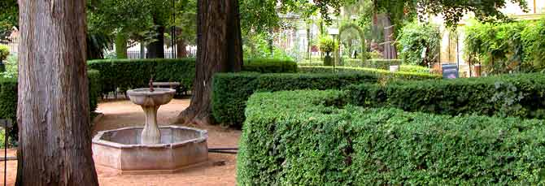

El Jardín Botanico de la Universidad de Granada es un jardín botánico de pequeñas dimensiones que se encuentra en la ciudad de Granada, perteneciente a la comunidad autónoma de Andalucía, España. Depende administrativamente de la Universidad de Granada.
 El Jardín botanico de la Universidad de Granada, se contruyó en 1783, estándo su perímetro rodeado de una verja labrada.
En el año de 1877 Francisco Morales esculpió las dos relleves que se encuentran en la portada, y que representan a dos ilustres botánicos, el sacerdote don Antonio José Cavanilles y el médigo Lagasca y Segura.
Hace unos años se reacondicionó retulando las especies con su nombre binomial y denominando a sus breves paseos con nombre de botánicos eminentes. En la actualidad, y aún más despues de la creación del jardín Botánico de la Cortujuela a unos 30 kilómetros de la ciudad de Granada, se ha convertido en un complemento ornamental, un jardín romántico e histórico del antiguo edificio universitario que ohy alberga la Facultad de Derecho.